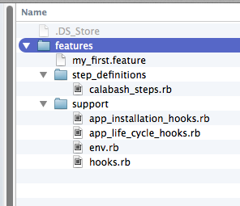
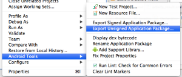
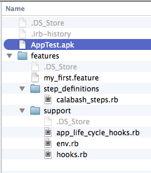

The content of this post it deprecated for now, because its tests against an old version of Calabash Android. It could be updated in the future. It is here for history purposes.
Calabash is a tool that allows us to write and execute automated acceptance test of mobile applications. It supports Android and IOS applications and allow performs various actions as touches, motions, insert texts in fields, element assert and take screenshots.
Calabash uses Cucumber approach to write tests in BDD language with .feature files, leaving the tests with natural language expressing the application behavior. Here will be presented an example of a simple Android application with its respective tests. The code could be downloaded on https://github.com/rondymesquita/Calabash-example-with-android
The run this project, we are going to use:
- Ruby 1.9.3
- Calabash-android gem
- ADB (Android Debug Bridge)
Installation
First off, it’s necessary to install the Calabash-Android gem:
gem install calabash-android
Create a folder which will be your test project. Via terminal inside this folder executes:
calabash-android gen
This will generate the archetype test project looking like:

Delete the file app_installation_hooks.rb, because it is not be used for now.
Configuration
The next step is to generate the .apk application file. The application used on thsi example consists in receive data from two EditTexts and send them to another activity. Using eclipse ide to generate the apk, click with right button over your project and select Android Tools > Export Unsigned Application Package.

Copy the .apk to the root folder of test projects like this:

Before running the tests, it is necessary to reassign the apk file with current keystore. So:
calabash-android resign [apk_path]
Execution
To execute the tests, just run:
calabash-android run [apk_path]
Explaining
There is a file on the project test folder with extension .feature. The BDD scenarios are written on these files. Each line of text is called ‘step’ that matches with a call to calabash’s API. The default steps from API could be consulted on this page:
Each file could match to a software feature, where the test scenarios of this feature and detailed.
Features Files
These files follows the Cucumber structure of BDD approach.
Scenario: Fill fields and see message in another screen
Given I open the application
And I enter text "Rondy" into field with id "etName"
And I enter text "Rock" into field with id "etMusic"
When I press the "Send" button
Then I see the text "Rondy likes Rock"
Steps Files
If you want to implement your own steps, just create a new * .rb* file on step_definitions folder. At the body’s method you must call the calabash’s API. The API could be consulted on this link: https://github.com/calabash/calabash-android/blob/master/ruby-gem/lib/calabash-android/steps
And /^I press the "([^\"]*)"$/ |name| do
touch("* text:'#{name}'")
end